When gradient is small¶
约 6636 个字 预计阅读时间 22 分钟
Critical Point¶
Training Fails because¶
现在我们要讲的是Optimization的部分，所以我们要讲的东西基本上跟Overfitting没有什么太大的关联，我们只讨论Optimization的时候，怎么把gradient descent做得更好，那为什么Optimization会失败呢？
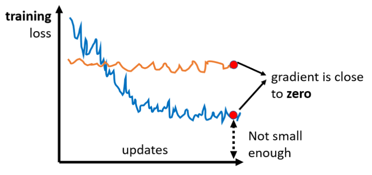
在做Optimization的时候，你常常会发现，随着你的参数不断的update，你的training的loss不会再下降，但是你对这个loss仍然不满意，就像我刚才说的，你可以把deep的network，跟linear的model，或比较shallow network比较，发现说它没有做得更好，所以你觉得deep network，没有发挥它完整的力量，所以Optimization显然是有问题的
但有时候你会甚至发现，一开始你的model就train不起来，一开始你不管怎么update你的参数，你的loss通通都掉不下去，那这个时候到底发生了什么事情呢？
过去常见的一个猜想，是因为我们现在走到了一个地方，这个地方参数对loss的微分为零，当你的参数对loss微分为零的时候，gradient descent就没有办法再update参数了，这个时候training就停下来了，loss当然就不会再下降了。
讲到gradient为零的时候，大家通常脑海中最先浮现的，可能就是 local minima ，所以常有人说做deep learning，用gradient descent会卡在local minima，然后所以gradient descent不work，所以deep learning不work。
但是如果有一天你要写，跟deep learning相关paper的时候，你千万不要讲卡在local minima这种事情，别人会觉得你非常没有水准，为什么
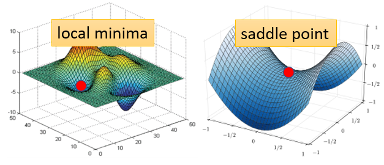
因为不是只有local minima的gradient是零，还有其他可能会让gradient是零，比如说 saddle point ，所谓的saddle point，其实就是gradient是零，但是不是local minima，也不是local maxima的地方，像在右边这个例子里面 红色的这个点，它在左右这个方向是比较高的，前后这个方向是比较低的，它就像是一个马鞍的形状，所以叫做saddle point，那中文就翻成鞍点
像saddle point这种地方，它也是gradient为零，但它不是local minima，那像这种gradient为零的点，统称为 critical point ，所以你可以说你的loss，没有办法再下降，也许是因为卡在了critical point，但你不能说是卡在local minima，因为saddle point也是微分为零的点
但是今天如果你发现你的gradient，真的很靠近零，卡在了某个critical point，我们有没有办法知道，到底是local minima，还是saddle point？其实是有办法的
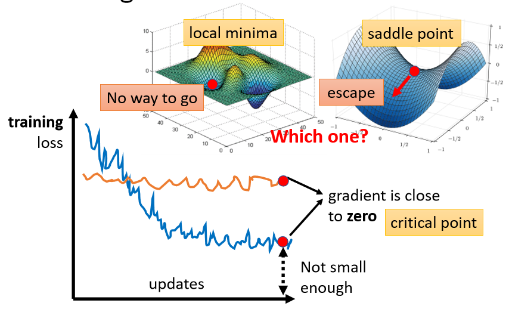
为什么我们想要知道到底是卡在local minima，还是卡在saddle point呢
- 因为如果是卡在local minima，那可能就没有路可以走了，因为四周都比较高，你现在所在的位置已经是最低的点，loss最低的点了，往四周走 loss都会比较高，你会不知道怎么走到其他的地方去
- 但saddle point就没有这个问题，如果你今天是卡在saddle point的话，saddle point旁边还是有路可以走的，还是有路可以让你的loss更低的，你只要逃离saddle point，你就有可能让你的loss更低
所以鉴别今天我们走到，critical point的时候，到底是local minima，还是saddle point，是一个值得去探讨的问题，那怎么知道一个critical point，到底是属于local minima，还是saddle point呢？
Warning of Math¶
那怎么知道说一个点，到底是local minima，还是saddle point呢？虽然我们没有办法完整知道，整个loss function的样子
Tayler Series Approximation¶
但是如果给定某一组参数，比如说蓝色的这个\(θ'\)，在\(θ'\)附近的loss function，是有办法被写出来的，它写出来就像是这个样子
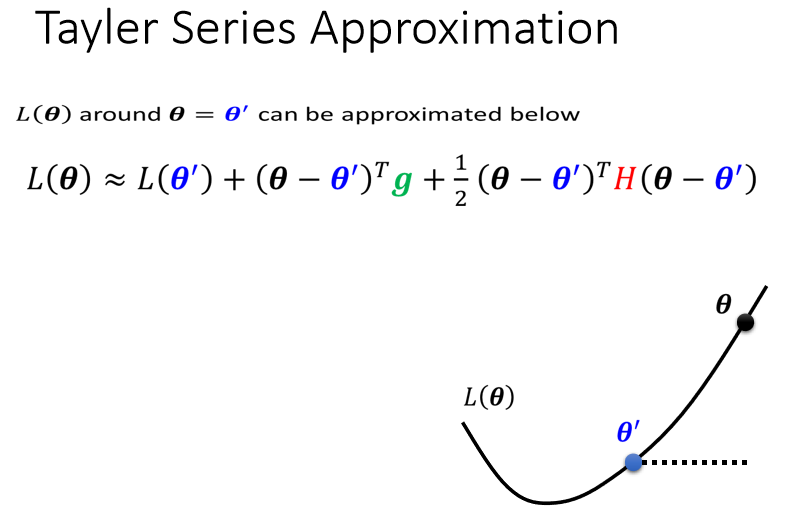
所以这个\(L(θ)\)完整的样子写不出来，但是它在\(θ'\)附近，你可以用这个式子来表示它，这个式子是，Tayler Series Appoximation泰勒级数展开，这个假设你在微积分的时候，已经学过了，所以我就不会细讲这一串是怎么来的，但我们就只讲一下它的概念，这一串里面包含什么东西呢?
-
第一项是\(L(θ')\)，就告诉我们说，当\(θ\)跟\(θ'\)很近的时候，\(L(θ)\)应该跟\(L(θ')\)还蛮靠近的
-
第二项是\((θ-θ')^Tg\)
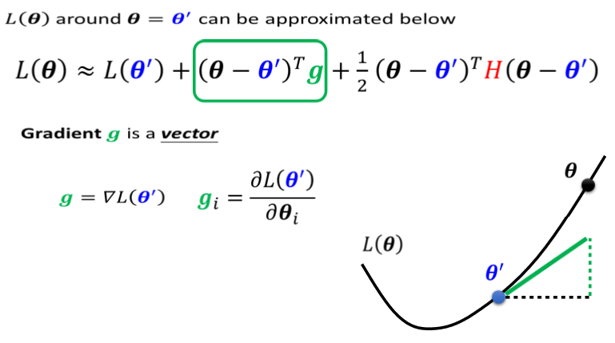
\(g\)是一个向量，这个g就是我们的gradient，我们用绿色的这个g来代表gradient，这个gradient会来弥补，\(θ'\)跟\(θ\)之间的差距，我们虽然刚才说\(θ'\)跟\(θ\)，它们应该很接近，但是中间还是有一些差距的，那这个差距，第一项我们用这个gradient，来表示他们之间的差距，有时候gradient会写成\(∇L(θ')\)，这个地方的\(g\)是一个向量，它的第i个component，就是θ的第i个component对L的微分，光是看g还是没有办法，完整的描述L(θ)，你还要看第三项
-
第三项跟Hessian有关，这边有一个$H $
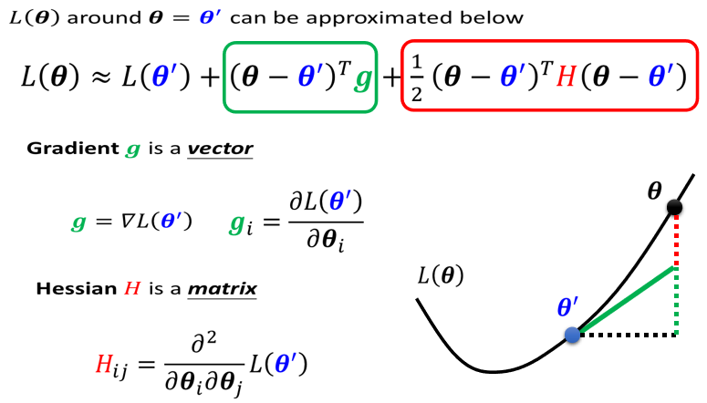
这个\(H\)叫做Hessian，它是一个矩阵，这个第三项是，再\((θ-θ')^TH(θ-θ')\)，所以第三项会再补足，再加上gradient以后，与真正的L(θ)之间的差距.H里面放的是L的二次微分，它第i个row，第j个column的值，就是把θ的第i个component，对L作微分，再把θ的第j个component，对L作微分，再把θ的第i个component，对L作微分，做两次微分以后的结果 就是这个\(H_i{_j}\)
如果这边你觉得有点听不太懂的话，也没有关系，反正你就记得这个\(L(θ)\)，这个loss function，这个error surface在\(θ'\)附近，可以写成这个样子，这个式子跟两个东西有关系，跟gradient有关系，跟hessian有关系，gradient就是一次微分，hessian就是里面有二次微分的项目
Hession¶
那如果我们今天走到了一个critical point，意味着gradient为零，也就是绿色的这一项完全都不见了
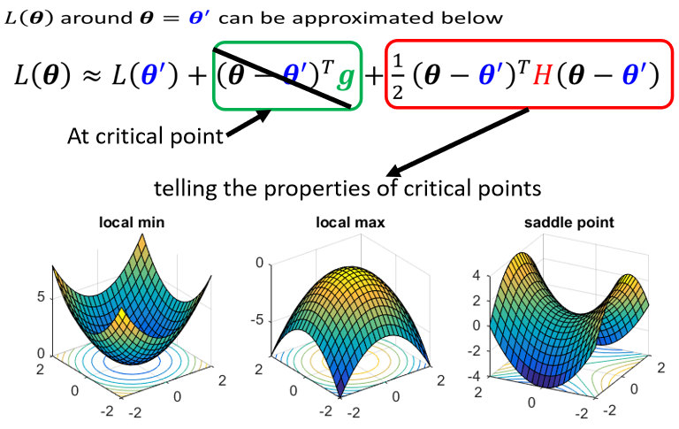
\(g\)是一个zero vector，绿色的这一项完全都不见了，只剩下红色的这一项，所以当在critical point的时候，这个loss function，它可以被近似为\(L(θ')\)，加上红色的这一项
我们可以根据红色的这一项来判断，在\(θ'\)附近的error surface，到底长什么样子
知道error surface长什么样子，我就可以判断
\(θ'\)它是一个 local minima ，是一个 local maxima ，还是一个 saddle point
我们可以靠这一项来了解，这个error surface的地貌，大概长什么样子，知道它地貌长什么样子，我们就可以知道说，现在是在什么样的状态，这个是Hessian
那我们就来看一下怎么根据Hessian，怎么根据红色的这一项，来判断θ'附近的地貌
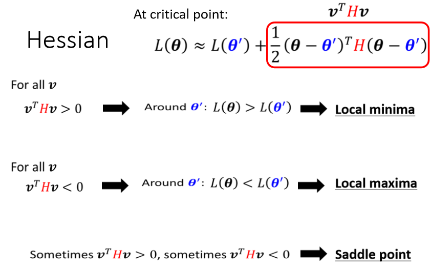
我们现在为了等一下符号方便起见，我们把\((θ-θ')\)用\(v\)这个向量来表示
- 如果今天对任何可能的\(v\)，\(v^THv\)都大于零，也就是说 现在θ不管代任何值，v可以是任何的v，也就是θ可以是任何值，不管θ代任何值，红色框框里面通通都大于零，那意味着说 \(L(θ)>L(θ')\)。\(L(θ)\)不管代多少 只要在\(θ'\)附近，\(L(θ)\)都大于\(L(θ')\)，代表\(L(θ')\)是附近的一个最低点，所以它是local minima
- 如果今天反过来说，对所有的\(v\)而言，\(v^THv\)都小于零，也就是红色框框里面永远都小于零，也就是说\(θ\)不管代什么值，红色框框里面都小于零，意味着说\(L(θ)<L(θ')\)，代表\(L(θ')\)是附近最高的一个点，所以它是local maxima
- 第三个可能是假设，\(v^THv\)，有时候大于零 有时候小于零，你代不同的v进去 代不同的θ进去，红色这个框框里面有时候大于零，有时候小于零，意味着说在θ'附近，有时候L(θ)>L(θ') 有时候L(θ)<L(θ')，在L(θ')附近，有些地方高 有些地方低，这意味着什么，这意味着这是一个saddle point
但是你这边是说我们要代所有的\(v\)，去看\(v^THv\)是大于零，还是小于零。我们怎么有可能把所有的v，都拿来试试看呢，所以有一个更简便的方法，去确认说这一个条件或这一个条件，会不会发生。
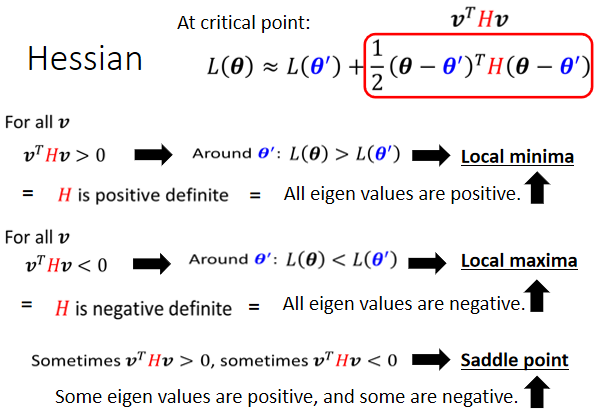
这个就直接告诉你结论，线性代数理论上是有教过这件事情的，如果今天对所有的v而言，\(v^THv\)都大于零，那这种矩阵叫做positive definite 正定矩阵，positive definite的矩阵，它所有的eigen value特征值都是正的
所以如果你今天算出一个hessian，你不需要把它跟所有的v都乘看看，你只要去直接看这个H的eigen value，如果你发现
- 所有eigen value都是正的，那就代表说这个条件成立，就\(v^THv\)，会大于零，也就代表说是一个local minima。所以你从hessian metric可以看出，它是不是local minima，你只要算出hessian metric算完以后，看它的eigen value发现都是正的，它就是local minima。
- 那反过来说也是一样，如果今天在这个状况，对所有的v而言，\(v^THv\)小于零，那H是negative definite，那就代表所有eigen value都是负的，就保证他是local maxima
- 那如果eigen value有正有负，那就代表是saddle point，
那假设在这里你没有听得很懂的话，你就可以记得结论，你只要算出一个东西，这个东西的名字叫做hessian，它是一个矩阵，这个矩阵如果它所有的eigen value，都是正的，那就代表我们现在在local minima，如果它有正有负，就代表在saddle point。
那如果刚才讲的，你觉得你没有听得很懂的话，我们这边举一个例子
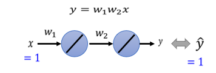
我们现在有一个史上最废的network $$ y= w₁×w₂×x $$ 我们有一个史上最废的training set，这个data set说，我们只有一笔data，这笔data是x，是1的时候，它的level是1 所以输入1进去，你希望最终的输出跟1越接近越好
而这个史上最废的training，它的error surface，也是有办法直接画出来的，因为反正只有两个参数 w₁ w₂，假设没有bias，只有w₁跟w₂两个参数，这个network只有两个参数 w₁跟w₂，那我们可以穷举所有w₁跟w₂的数值，算出所有w₁ w₂数值所代来的loss，然后就画出error surface 长这个样
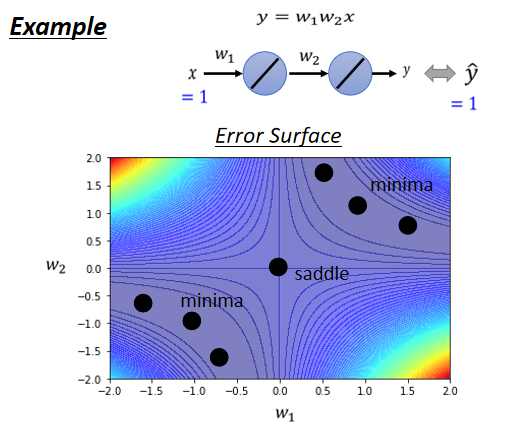
四个角落loss是高的，好 那这个图上你可以看出来说，有一些critical point，这个黑点点的地方(0，0)，原点的地方是critical point，然后事实上，右上三个黑点也是一排critical point，左下三个点也是一排critical point
如果你更进一步要分析，他们是saddle point，还是local minima的话，那圆心这个地方，原点这个地方 它是saddle point，为什么它是saddle point呢
你往左上这个方向走 loss会变大，往右下这个方向走 loss会变大，往左下这个方向走 loss会变小，往右下这个方向走 loss会变小，它是一个saddle point
而这两群critical point，它们都是local minima，所以这个山沟里面，有一排local minima，这一排山沟里面有一排local minima，然后在原点的地方，有一个saddle point，这个是我们把error surface，暴力所有的参数，得到的loss function以后，得到的loss的值以后，画出error surface，可以得到这样的结论
现在假设如果不暴力所有可能的loss，如果要直接算说一个点，是local minima，还是saddle point的话 怎么算呢
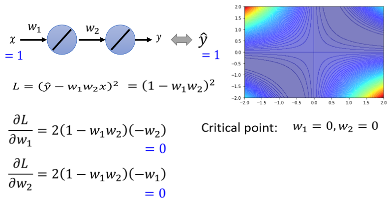
我们可以把loss的function写出来，这个loss的function 这个L是 $$ L=(\hat{y}-w_1 w_2 x)^2 $$ 正确答案 ŷ减掉model的输出，也就是w₁ w₂x，这边取square error，这边只有一笔data，所以就不会summation over所有的training data，因为反正只有一笔data，x代1 ŷ代1，我刚才说过只有一笔训练资料最废的，所以只有一笔训练资料，所以loss function就是\(L=(\hat{y}-w_1 w_2 x)^2\)，那你可以把这一个loss function，它的gradient求出来，w₁对L的微分，w₂对L的微分写出来是这个样子 $$ \frac{∂L}{∂w_1 }=2(1-w_1 w_2 )(-w_2 ) $$
这个东西 $$ \begin{bmatrix} \frac{∂L}{∂w_1 }\\ \frac{∂L}{∂w_2 } \end{bmatrix} $$ 就是所谓的g，所谓的gradient，什么时候gradient会零呢，什么时候会到一个critical point呢?
举例来说 如果w₁=0 w₂=0，就在圆心这个地方，如果w₁代0 w₂代0，w₁对L的微分 w₂对L的微分，算出来就都是零 就都是零，这个时候我们就知道说，原点就是一个critical point，但它是local maxima，它是local maxima，local minima，还是saddle point呢，那你就要看hessian才能够知道了
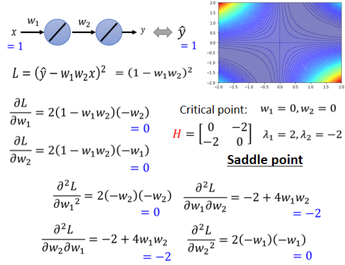
当然 我们刚才已经暴力所有可能的w₁ w₂了，所以你已经知道说，它显然是一个saddle point，但是现在假设还没有暴力所有可能的loss，所以我们要看看能不能够用H，用Hessian看出它是什么样的critical point，那怎么算出这个H呢
H它是一个矩阵，这个矩阵里面元素就是L的二次微分，所以这个矩阵里面第一个row，第一个coloumn的位置，就是w₁对L微分两次，第一个row 第二个coloumn的位置，就是先用w₂对L作微分，再用w₁对L作微分，然后这边就是w₁对L作微分，w₂对L作微分，然后w₂对L微分两次，这四个值组合起来，就是我们的hessian，那这个hessian的值是多少呢
这个hessian的式子，我都已经把它写出来了，你只要把w₁=0 w₂=0代进去，代进去 你就得到在原点的地方，hessian是这样的一个矩阵 $$ \begin{bmatrix} {0}&-2\\ {-2}&0 \end{bmatrix} $$ 这个hessian告诉我们，它是local minima，还是saddle point呢，那你就要看这个矩阵的eigen value，算一下发现，这个矩阵有两个eigen value，2跟-2 eigen value有正有负，代表saddle point
所以我们现在就是用一个例子，跟你操作一下 告诉你说，你怎么从hessian看出一个点，它一个critical point 它是saddle point，还是local minima，
Don't afraid of saddle point¶
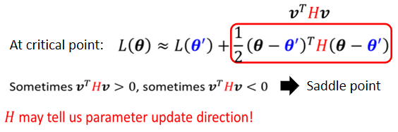
如果今天你卡的地方是saddle point，也许你就不用那么害怕了，因为如果你今天你发现，你停下来的时候，是因为saddle point 停下来了，那其实就有机会可以放心了
因为H它不只可以帮助我们判断，现在是不是在一个saddle point，它还指出了我们参数，可以update的方向，就之前我们参数update的时候，都是看gradient看g，但是我们走到某个地方以后，发现g变成0了，不能再看g了，g不见了gradient没有了，但如果是一个saddle point的话，还可以再看H，怎么再看H呢，H怎么告诉我们，怎么update参数呢
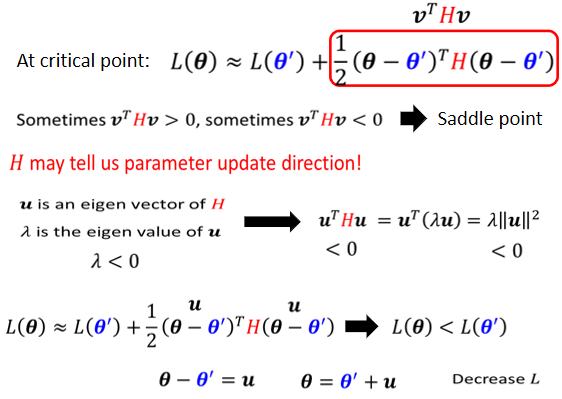
我们这边假设\(\mu\)是H的eigen vector特征向量，然后\(λ\)是u的eigen value特征值。
如果我们把这边的\(v\)换成\(\mu\)的话，我们把\(\mu\)乘在H的左边，跟H的右边，也就是\(\mu^TH\mu\)， \(H\mu\)会得到\(λ\mu\)，因为\(\mu\)是一个eigen vector。H乘上eigen vector特征向量会得到特征向量λ eigen value乘上eigen vector即\(λ\mu\)
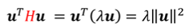
所以我们在这边得到uᵀ乘上λu，然后再整理一下，把uᵀ跟u乘起来，得到‖u‖²，所以得到λ‖u‖²
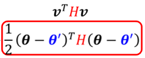
假设我们这边v，代的是一个eigen vector，我们这边θ减θ'，放的是一个eigen vector的话，会发现说我们这个红色的项里面，其实就是λ‖u‖²
那今天如果λ小于零，eigen value小于零的话，那λ‖u‖²就会小于零，因为‖u‖²一定是正的，所以eigen value是负的，那这一整项就会是负的，也就是u的transpose乘上H乘上u，它是负的，也就是红色这个框里是负的
所以这意思是说假设\(θ-θ'=\mu\)，那这一项\((θ-θ')^TH(θ-θ')\)就是负的，也就是\(L(θ)<L(θ')\)
也就是说假设\(θ-θ'=\mu\)，也就是，你在θ'的位置加上u，沿着u的方向做update得到θ，你就可以让loss变小
因为根据这个式子，你只要θ减θ'等于u，loss就会变小，所以你今天只要让θ等于θ'加u，你就可以让loss变小，你只要沿着u，也就是eigen vector的方向，去更新你的参数 去改变你的参数，你就可以让loss变小了
所以虽然在critical point没有gradient，如果我们今天是在一个saddle point，你也不一定要惊慌，你只要找出负的eigen value，再找出它对应的eigen vector，用这个eigen vector去加θ'，就可以找到一个新的点，这个点的loss比原来还要低
举具体的例子
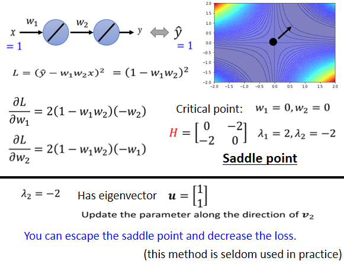
刚才我们已经发现，原点是一个critical point，它的Hessian长这个样，那我现在发现说，这个Hessian有一个负的eigen value，这个eigen value等于-2，那它对应的eigen vector，它有很多个，其实是无穷多个对应的eigen vector，我们就取一个出来，我们取\(\begin{bmatrix}{1} \\\ {1}\end{bmatrix}\)是它对应的一个eigen vector，那我们其实只要顺着这个u的方向，顺着\(\begin{bmatrix}{1} \\\ {1}\end{bmatrix}\)这个vector的方向，去更新我们的参数，就可以找到一个，比saddle point的loss还要更低的点
如果以今天这个例子来看的话，你的saddle point在(0，0)这个地方，你在这个地方会没有gradient，Hessian的eigen vector告诉我们，只要往\(\begin{bmatrix}{1} \\\ {1}\end{bmatrix}\)的方向更新，你就可以让loss变得更小，也就是说你可以逃离你的saddle point，然后让你的loss变小，所以从这个角度来看，似乎saddle point并没有那么可怕
如果你今天在training的时候，你的gradient你的训练停下来，你的gradient变成零，你的训练停下来，是因为saddle point的话，那似乎还有解
但是当然实际上，在实际的implementation里面，你几乎不会真的把Hessian算出来，这个要是二次微分，要计算这个矩阵的computation，需要的运算量非常非常的大，更遑论你还要把它的eigen value，跟 eigen vector找出来，所以在实作上，你几乎没有看到，有人用这一个方法来逃离saddle point
等一下我们会讲其他，也有机会逃离saddle point的方法，他们的运算量都比要算这个H，还要小很多，那今天之所以我们把，这个saddle point跟 eigen vector，跟Hessian的eigen vector拿出来讲，是想要告诉你说，如果是卡在saddle point，也许没有那么可怕，最糟的状况下你还有这一招，可以告诉你要往哪一个方向走.
Saddle Point v.s. Local Minima¶
讲到这边你就会有一个问题了，这个问题是，那到底saddle point跟local minima，谁比较常见呢，我们说，saddle point其实并没有很可怕，那如果我们今天，常遇到的是saddle point，比较少遇到local minima，那就太好了，那到底saddle point跟local minima，哪一个比较常见呢？这边我们要讲一个不相干的故事，先讲一个故事
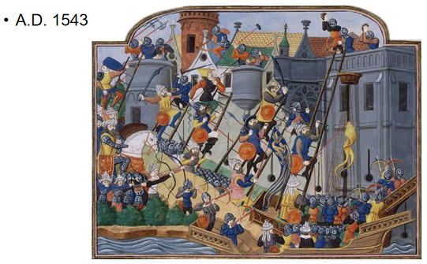
这个故事发生在1543年，1543年发生了什么事呢，那一年君士坦丁堡沦陷，这个是君士坦丁堡沦陷图，君士坦丁堡本来是东罗马帝国的领土，然后被鄂图曼土耳其帝国占领了，然后东罗马帝国就灭亡了，在鄂图曼土耳其人进攻，君士坦丁堡的时候，那时候东罗马帝国的国王，是君士坦丁十一世，他不知道要怎么对抗土耳其人，有人就献上了一策，找来了一个魔法师叫做狄奥伦娜
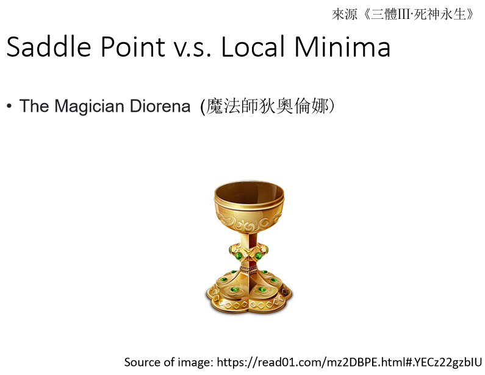
这是真实的故事，出自三体的故事，这个狄奥伦娜这样说，狄奥伦娜是谁呢，他有一个能力跟张飞一样，张飞不是可以万军从中取上将首级，如探囊取物吗，狄奥伦娜也是一样，他可以直接取得那个苏丹的头，他可以从万军中取得苏丹的头，大家想说狄奥伦娜怎么这么厉害，他真的有这么强大的魔法吗，所以大家就要狄奥伦娜，先展示一下他的力量，这时候狄奥伦娜就拿出了一个圣杯，大家看到这个圣杯就大吃一惊，为什么大家看到这个圣杯，要大吃一惊呢，因为这个圣杯，本来是放在圣索菲亚大教堂的地下室，而且它是被放在一个石棺里面，这个石棺是密封的，没有人可以打开它.
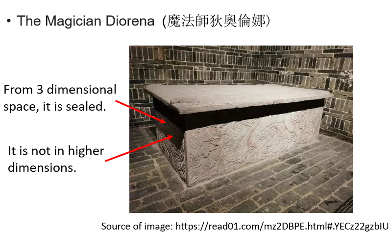
但是狄奥伦娜他从里面取得了圣杯，而且还放了一串葡萄进去，君士坦丁十一世为了要验证，狄奥伦娜是不是真的有这个能力，就带了一堆人真的去撬开了这个石棺，发现圣杯真的被拿走了，里面真的有一串新鲜的葡萄，就知道狄奥伦娜真的有，这个万军从中取上将首级的能力，那为什么迪奥伦娜可以做到这些事呢，那是因为这个石棺你觉得它是封闭的，那是因为你是从三维的空间来看，从三维的空间来看，这个石棺是封闭的，没有任何路可以进去，但是狄奥伦娜可以进入四维的空间，从高维的空间中，这个石棺是有路可以进去的，它并不是封闭的，至于狄奥伦娜有没有成功刺杀苏丹呢，你可以想象一定是没有嘛，所以君坦丁堡才沦陷，那至于为什么没有，大家请见于三体，
总之这个从三维的空间来看，是没有路可以走的东西，在高维的空间中是有路可以走的，error surface会不会也一样呢
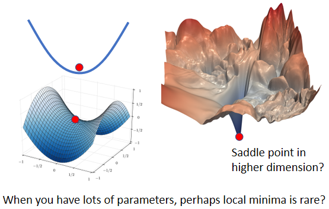
所以你在一维的空间中，一维的一个参数的error surface，你会觉得好像到处都是local minima，但是会不会在二维空间来看，它就只是一个saddle point呢，常常会有人画类似这样的图，告诉你说Deep Learning的训练，是非常的复杂的，如果我们移动某两个参数，error surface的变化非常的复杂，是这个样子的，那显然它有非常多的local minima，我的这边现在有一个local minima，但是会不会这个local minima，只是在二维的空间中，看起来是一个local minima，在更高维的空间中，它看起来就是saddle point，在二维的空间中，我们没有路可以走，那会不会在更高的维度上，因为更高的维度，我们没办法visualize它，我们没办法真的拿出来看，会不会在更高维的空间中，其实有路可以走的，那如果维度越高，是不是可以走的路就越多了呢，所以 今天我们在训练，一个network的时候，我们的参数往往动輒百万千万以上，所以我们的error surface，其实是在一个非常高的维度中，对不对，我们参数有多少，就代表我们的error surface的，维度有多少，参数是一千万 就代表error surface，它的维度是一千万，竟然维度这么高，会不会其实，根本就有非常多的路可以走呢，那既然有非常多的路可以走，会不会其实local minima，根本就很少呢，
而经验上，如果你自己做一些实验的话，也支持这个假说
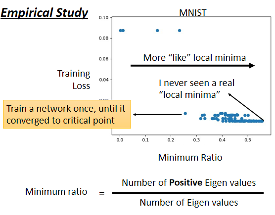
这边是训练某一个network的结果，每一个点代表，训练那个network训练完之后，把它的Hessian拿出来进行计算，所以这边的每一个点，都代表一个network，就我们训练某一个network，然后把它训练训练，训练到gradient很小，卡在critical point，把那组参数出来分析，看看它比较像是saddle point，还是比较像是local minima
- 纵轴代表training的时候的loss，就是我们今天卡住了，那个loss没办法再下降了，那个loss是多少，那很多时候，你的loss在还很高的时候，训练就不动了 就卡在critical point，那很多时候loss可以降得很低，才卡在critical point，这是纵轴的部分
- 横轴的部分是minimum ratio，minimum ratio是eigen value的数目分之正的eigen value的数目，又如果所有的eigen value都是正的，代表我们今天的critical point，是local minima，如果有正有负代表saddle point，那在实作上你会发现说，你几乎找不到完全所有eigen value都是正的critical point，你看这边这个例子里面，这个minimum ratio代表eigen value的数目分之正的eigen value的数目，最大也不过0.5到0.6间而已，代表说只有一半的eigen value是正的，还有一半的eigen value是负的，
所以今天虽然在这个图上，越往右代表我们的critical point越像local minima，但是它们都没有真的，变成local minima，就算是在最极端的状况，我们仍然有一半的case，我们的eigen value是负的，这一半的case eigen value是正的，代表说在所有的维度里面有一半的路，这一半的路 如果要让loss上升，还有一半的路可以让loss下降。
所以从经验上看起来，其实local minima并没有那么常见，多数的时候，你觉得你train到一个地方，你gradient真的很小，然后所以你的参数不再update了，往往是因为你卡在了一个saddle point。
本文总阅读量次